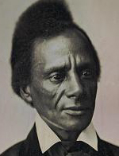

|

|

|
|
|
The eldest son of John and Nancy (Lenox) Remond, Charles Lenox Remond
was born in Salem, Mass., where he received his education. His father, a
well-known Salem hairdresser, merchant, and caterer, was a native of
Curacao. Charles Remond became an active member of the Massachusetts
Anti-Slavery Society in 1838 when he was appointed its first black
lecturer. On speaking tours with other agents throughout Massachusetts,
Rhode Island, Maine, New York, Pennsylvania, and the Midwest, he
lectured every day, sometimes twice a day for three-week periods, often
out-of-doors when halls and houses were closed to him. In spite of
numerous mobs and rumors of mob activities, he persistently demanded
"immediate, unconditional emancipation for every human regardless of
tongue or color." As a Garrisonian he urged moral suasion as the only
method to end slavery. His fiery eloquence and strong appeals to reason
made him much in demand as a speaker. Parker Pillsbury called Remond the
most forceful abolitionist of his day, whose "power of speech, argument
and eloquence rarely if ever" failed to thrill a House of Congress or
legislative hall.
At age thirty Remond, then a resident of Rhode Island, was chosen by
the American Anti-Slavery Society one of the four delegates to attend
the 1840 World's Anti-Slavery Convention meeting in London on June 12, a
highlight of his career. He was forced to travel in the steerage of the
Columbus because of his color. Upon arrival at the Convention
hall, Remond also learned that the London convention had forced the
American female delegation, because of their sex, to sit in the rear
gallery of the auditorium. Remond, along with William Lloyd Garrison and
the two other delegates, refused to occupy their seats on the floor and
seated themselves in the gallery with the women. Lady Byron
conspicuously took a seat in the small gallery with Garrison and Remond,
conversing freely with the latter.
At a public anniversary meeting of the British and Foreign
Anti-Slavery Society in Exeter Hall on June 23, the day after the close
of the World's Anti-Slavery Convention, Remond, in his first speech in
England, said that for the first time in his life, he "stood upon soil
which a slave had but to tread to become free." Relating pertinent facts
concerning both the slave and the free man of color, he condemned the
slave system "which was driving to misery and death thousands every
year." Eager to inform the people of England, Scotland, and Ireland on
the subject of American slavery, Remond remained abroad for eighteen
months. Wherever he went he was received with great enthusiasm by large
audiences. Glowing accounts of his speeches appeared in the local
newspapers, and he was treated with courtesy and respect by leaders in
British society.
When Remond sailed for home on the Caledonia, a Halifax packet, on
December 4, 1841, he brought with him an "Address from the People of
Ireland" containing 60,000 signatures, urging Irish residents in the
United States to "oppose slavery by peaceful means and to insist upon
liberty for all regardless of color, creed, or country." He also brought
a number of boxes, the contents of which were to be sold at the Boston
AntiSlavery Bazaar in December 1841. Henry Thompson and eminent
merchants in Liverpool saw to it that Remond had a comfortable berth and
was given the best attention during his voyage home.
Remond arrived in Boston exhausted from continuous illness during the
rough voyage, only to face immediately the Jim Crow car from Boston to
Salem. Eager to be present at the opening of the bazaar he met at the
depot two white friends who seated themselves in the compartment for
persons of color. Immediately the conductor forced Remond's friends out
of it, no new experience to Remond. On February 22, 1842, when Remond
became the first black person to address the legislative committee in
the Massachusetts House of Representatives, his speech on "Rights of
Colored Persons in Travelling" was one of the great orations of the day.
He was besieged with requests to lecture at antislavery meetings, black
peoples' conventions, anniversary and protest meetings. For instance, at
the January 28, 1842, meeting held in Boston urging the abolition of
slavery in the District of Columbia, Remond presented to the audience of
4000 the "Address from the People of Ireland" in a speech that was
"brief, but energetic and eloquent." The hostility of many
Irish-Americans to black people and to abolition led many civil rights
leaders to manifest little interest in the plight of the Irish in
England.
At the testimonial meeting of black citizens of Boston (December 17,
1855) to honor William Cooper Nell for his efforts in opening the public
schools of Boston to all children, regardless of color, Remond stated
that he regarded the occasion as an indication that black people were
beginning to understand "the necessity for adhesiveness and
consistency," but he wished it to be clear that they were dissatisfied
"as long as they were excluded from the jury box," especially when black
men were to be tried. He urged his people to withhold taxes when legal
rights were denied them. "Their motto should be 'no privilege no pay.'"
The Negro should have been more radical, not afraid of martyrdom, not
too slow in their movements or too indefinite in their views and
sentiments.
Regardless of the indignities Remond suffered because of his color he
opposed designation by color. At the May 9, 1867, National Convention of
the American Equal Rights Association, where he was elected one of the
vice-presidents and served on its finance committee, he opposed the word
colored in one of the resolutions. In a letter dated April 5, 1869,
Remond "objected to colored schools, colored Churches with colored
ministers and colored teachers-also to a black minister to black Hayti."
During the great debates which took place as to who should obtain
citizenship first, women or the black man, Remond stated at the May 9,
1867 meeting: "All l ask for myself, l claim for my wife and sister...No
class of citizens in this country can be deprived of the ballot without
injuring every other class."
Remond was in poor health most of his life. His salary as an
antislavery lecturer was irregular. To supplement his income, he opened
in June 1856 a Ladies and Gentlemen's Dining Room, "conducted on
strictly temperance principles." Remond evidently did not spend much
time serving customers, for in the fall and winter there were
inaugurated the "100 Conventions" which were held in New England, New
York, Pennsylvania, Ohio, Michigan, Indiana, Illinois, and Wisconsin.
His heavy lecture schedule and the death of his first wife Amy Matilda,
the daughter of Peter Williams, on August 15, 1856, at age forty-seven,
further undermined his health.
When recruitment of black troops for the Civil War began on February
16, 1863, Remond was appointed one of the agents to enlist men for the
54th Massachusetts Regiment, the first black regiment from the northern
states to see action. In 1865 he was appointed a Boston street light
inspector. Six years later he became a clerk in the Boston Custom House,
a position he held until his death.
Early in 1866 Remond moved to South Reading Mass., renamed Wakefield
in 1868, where he paid taxes from 1866 to 1873. In Greenwood, a
subdivision of Wakefield, he owned land, a house, livestock, a barn, and
a carriage house. Shortly after he settled in Wakefield his son, Wendell
P., died on March 29, 1866, at the age of two and a half. His last son,
Albert Ernest, was born in Wakefield on July 31, 1866. Both of these
children were by Remond's second wife Elizabeth Thayer Magee, who died
on February 3, 1872. Remond's young daughter died two and a half months
later at age twelve. The death of Charles L. Jr., a student, occurred on
July 7, 1881, at the age of twenty. Tuberculosis, which afflicted the
entire family, caused the death of Charles Lenox Remond on December 22,
1873, at the age of sixty-three.
Source: Rayford W. Logan and Michael R. Winston, eds. Dictionary
of American Negro Biography (New York: W. W. Norton, 1983), 520-22.
|